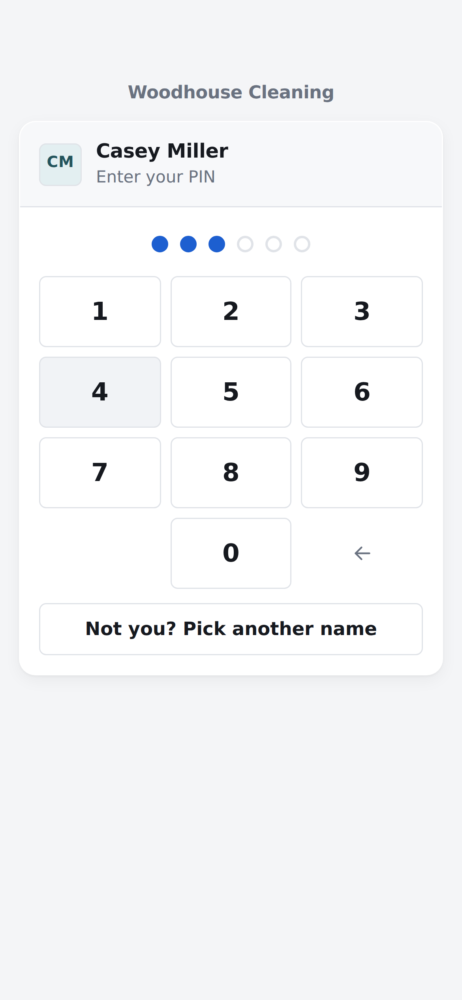
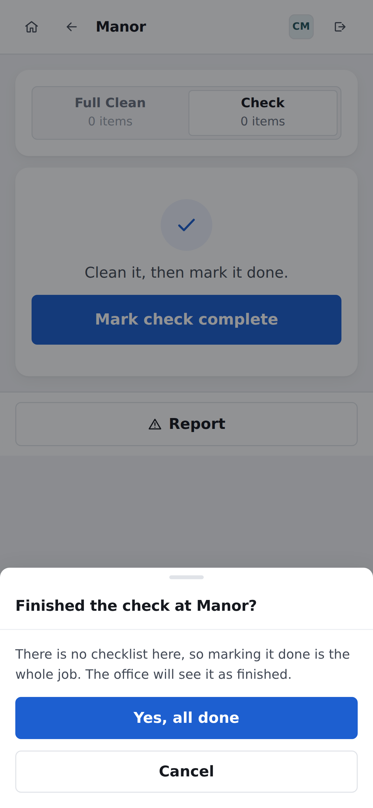
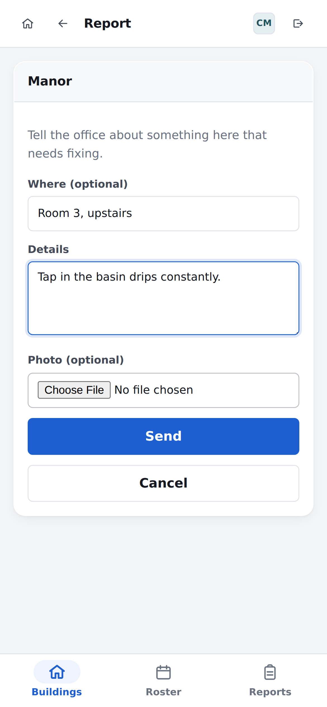

The short version
The whole job, in four steps
If you read nothing else, read this page.
- Sign in. Tap your name, then tap your PIN.
- Read today's list. The buildings to clean are at the top, in
order. Number 1 first.
- Clean the building. The app is not involved in this part.
- Open the building in the app and press the big blue button.
That tells the office it is done.
Something broken, or something left behind?
Press Report. The office is told straight
away, and you can carry on.
Two words you will see all day
| Check |
The quick walk round. Is it still clean, is it stocked, is anything
broken. |
| Full Clean |
The whole thing, top to bottom. |
The office chooses which one, and
the app tells you. You do not have to decide.
Step 1 · you only do this once
Put the app on your phone
It is a website, not an App Store app. Nothing to buy,
nothing to update.
- Open the address in your phone's browser. The office will
send you the link. Write it on the front page of this guide.
- iPhone: tap the Share button at
the bottom of the screen, scroll down, and tap
Add to Home Screen.
- Android: tap Install on the
bar under the names. If you do not see it, open the browser's menu
and tap Install app.
Why bother?
You get an icon on your home screen, it opens full screen with no
address bar, and you never have to find the link again.
You can skip this and just use
the browser. Everything works the same.

The bar under the names is the one to tap.
Step 2
Sign in
Two taps and a PIN. No username, nothing to type.
Tap your name.

Tap your PIN.
- Tap your name. Yours is usually the first one.
- Tap your PIN. It signs you in on the last number, so there
is no button to press afterwards.
It remembers you. On your own phone you will not be asked for
your PIN again.
Handing the phone back? Tap the arrow in the top right corner to
sign out.
Forgotten your PIN? The office can set you a new one. Nobody can
look up the old one.
Tapped the wrong name?
Tap Not you? Pick another name at the bottom
of the keypad, and start again.
Step 3
Read today's list
This is the screen you start on. It answers one question:
what is left to clean today.
- Today's date. The arrows look at other days. You can only
tick off work on today, so come back to Today before you start.
- How many buildings are left. The bar fills up as they are
signed off.
- Your hours today, if the office has rostered you on.
- The buildings to clean. They are in the order the office
wants them done.
The same list for everyone
The plan says what needs cleaning, not who does it. Sort out between
you who takes what, and the app keeps up.
Step 4 · the important one
Mark the building done
Clean the building first. Then open it in the app and press
the blue button.
Tap the building on your list.

Then tap Yes, all done.
- Tap the building on today's list.
- Tap the blue button — Mark check complete, or
Mark full clean complete.
- Tap "Yes, all done" when it asks.
The app takes you straight back to your list, and that building turns
green.
Our buildings have no tick list
There is nothing to tick off room by room. One button is the whole job.
When something is wrong
Report a problem
A broken tap, a blocked toilet, a light out, something left
behind. Tell the office through the app.
- Tap Report. It is the blue button in the corner of your
list, and it is also inside every building.
- Where — in your own words. "Kitchen near the door", "Room 3,
upstairs". You can leave it empty.
- Details — what is wrong.
- Photo — optional, but it saves a lot of questions.
- Tap Send. The office gets it straight away.
Use it for lost property too
Anything worth telling the office about goes here. It does not have to
be a fault.
You do not have to wait for an answer, and you
do not have to stop cleaning. Send it and carry on.
The Reports tab keeps every one of them until
the office deals with it.

Where, what, and a photo if you have one.
Cut this out
The short version, for the wall
Pin it up in the cleaning cupboard, or fold it into a
pocket.
Woodhouse cleaning app — the whole job
- Tap your name, tap your PIN.
- Clean the buildings on today's list, starting at number 1.
- Open each one and press the blue button when it is finished.
Something broken or left
behind? Press Report.